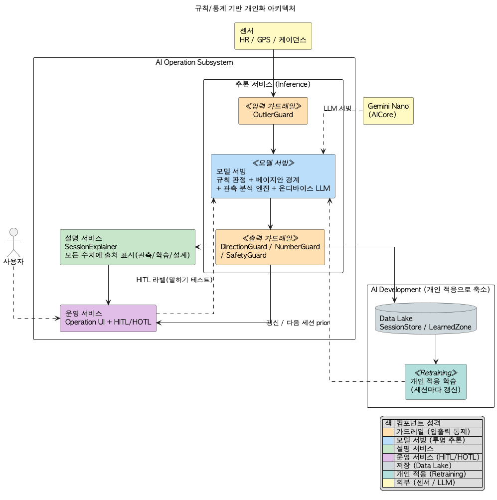
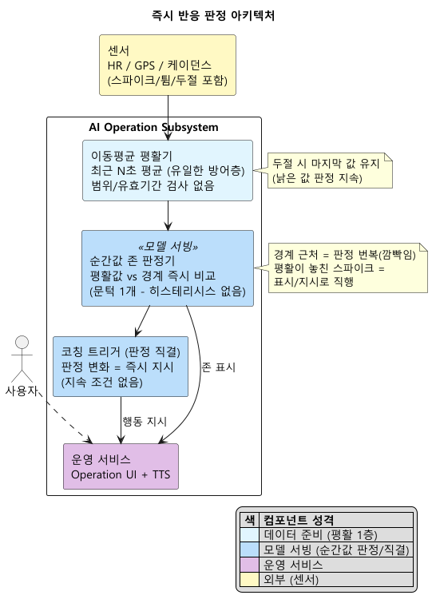

인증과제 샘플(씬스틸러) DP 형식 3장 + Appendix 1장 — 2026-07-31 v1 — 정본: arch/dp/dp-04-robustness/-decision.md, 원고: report/report-011
| (1안) 계층 방어 판정 아키텍처채택 | (2안) 즉시 반응 판정 아키텍처 | |
|---|---|---|
| 한 줄 소개 |
성격이 다른 방어를 네 층으로 겹쳐, 잘못된 지시가 나가지 않게 하는 구조 | 짧은 이동평균 하나로 다듬고 바로 판정해 지시까지 잇는 구조 |
| 구조 |
 ① 있을 수 없는 값(심박 40 미만/220 초과, 낡은 값)은 문에서 버린다. ② 화면 표시는 순간값으로 빠르게 하되 이중 문턱으로 깜빡임을 막고, 코칭은 60초 지속된 상태에만 반응한다. ③ 추세는 창 통계(기울기+신뢰도)로 읽고, 문턱은 그 사람 노이즈의 배수로 자가 보정한다. ④ 센서가 빠지면 다음 소스로 갈아탄다 |
 최근 몇 초의 이동평균으로 신호를 다듬은 뒤, 순간값을 경계와 바로 비교해 판정하고 코칭까지 그대로 잇는다. 구조가 단순하고 반응이 수 초로 빠르다 |
| 장점 |
강건성 ★★★★★ 테스트가능성 ★★★★ |
수행효율성 ★★★★★ 기능정확성 ★★★ |
| 단점 |
수행효율성 ★★★★ 기능정확성 ★★★★ |
강건성 ★★ 제어가능성 ★★★ |
| Trade Off |
오판이 지시가 되는 것을 구조로 막는다. 대신 코칭 반응이 최대 60초 늦다(의도적 선택 — 화면 표시는 즉시) | 변화가 수 초 안에 반영되고 단순하다. 대신 평활이 놓친 노이즈가 그대로 지시가 되고, 경계 근처 번복을 막을 장치가 없다 |
후보 1: 계층 방어 판정 아키텍처 채택
| 층 | 하는 일 | 막는 것 |
|---|---|---|
| 1. 입력 가드레일 | 생리 범위 밖 값과 낡은 값을 문에서 버린다 | 순간 스파이크, 낡은 값 |
| 2. 이중 기준 판정 | 표시는 순간값+이중 문턱, 코칭은 60초 지속 조건 | 깜빡임, 순간 이탈의 지시 직행 |
| 3. 통계 평탄화 | 추세는 창 기울기+신뢰도로, 문턱은 개인 노이즈의 배수로 | 잡음의 추세 오독, 노이즈 개인차 |
| 4. 소스 폴백 | 센서 부재/두절 시 다음 소스로 갈아탄다 | 두절, GPS 튐 |
| 품질 속성 | (1안) 계층 방어 판정 | (2안) 즉시 반응 판정 |
|---|---|---|
| 강건성 | ★★★★★ | ★★ |
| 제어가능성 | ★★★★★ | ★★★ |
| 테스트가능성 | ★★★★ | ★★★ |
| 기능적응성 | ★★★★ | ★★ |
| 수행효율성 | ★★★★ | ★★★★★ |
| 기능정확성 | ★★★★ | ★★★ (잠재, 미검증) |
평가의 조건: 별점은 이 DP의 결정 범위가 해당 QA에 미치는 영향을 이 과제 조건에서 평가한 것이라, 같은 QA 명칭이라도 DP마다 평가 대상 행위가 다르다(예: DP1의 기능적응성=규칙 밖 패턴 학습 능력, DP3의 기능적응성=경계 적응 지연). 이 별점은 손목 광학 심박, 야외 GPS, 출력이 행동 지시, 정답지 없음이라는 이 과제 조건에서의 평가다. 조건이 다르면(가슴 스트랩 심전도급 신호, 출력이 기록/표시 위주) 2안이 우선될 수 있다.
들어올 때/나갈 때 문턱 분리 = hysteresis / 판정 번복 = flicker, chattering / 일정 시간 지속 후 반응 = on-delay(경보 관리 표준 ISA-18.2) / 개인 노이즈 배수 문턱 = k·σ(통계적 공정 관리) / 두절 시 갈아타기 = graceful degradation
근거 문헌: 슈미트 트리거(이중 문턱 표준 기법) / ISA-18.2(경보 지속 조건과 데드밴드) / Shewhart 관리도(산포 배수 관리한계) / 손목 광학 심박의 운동 중 오차(검증 연구들의 일관된 보고)
상세 = arch/dp/dp-04-robustness/ (decision / research / counter-catalog)